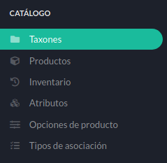
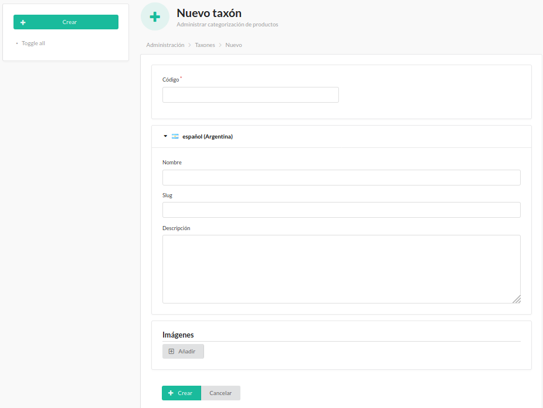

Catálogo¶

Menú de Catálogo.¶
El menú Catálogo contiene los ítems:
Taxones¶
Los Taxones son una forma de agrupar en categorías los diferentes productos.
Es recomendable utilizar esta forma de organización debido a la complejidad que implica administrar todos los productos de manera independiente.

Taxones.¶